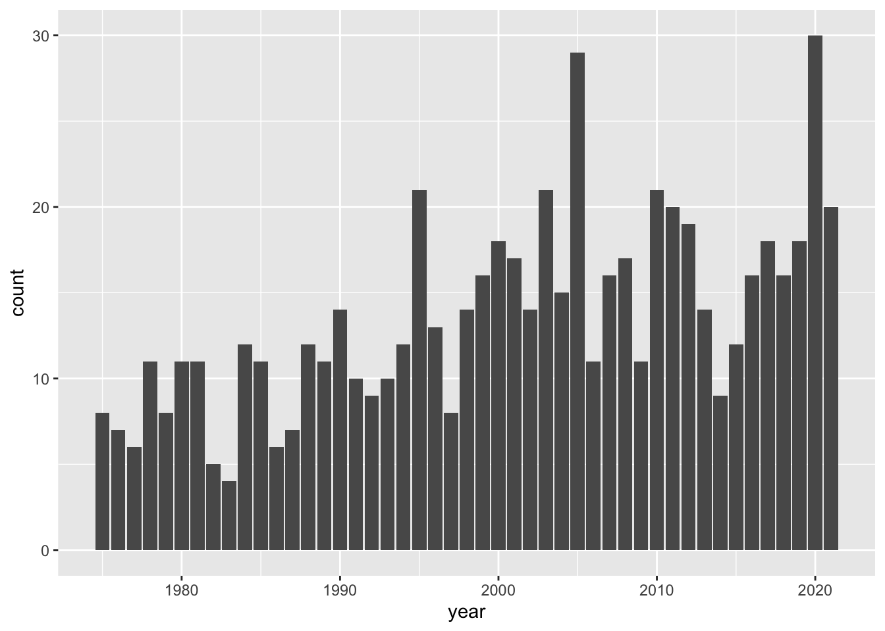

11 Summary
So far, we’ve covered several functions from "dplyr", as well as some other functions in R:
- functions from
"dplyr"pull()andselect()filter()group_by()arrange()anddesc()count(),distinct(),summarise()
- functions in base R
unique(),sort(),mean(),summary()
11.1 Number of Storms per Year
If you recall, our first ggplot involved a barchart for the values in column year
ggplot(data = storms) +
geom_bar(aes(x = year))
We discovered that the 47-year period of recorded data from 1975 to 2021. We can take a further step and ask: how many storms are there in each year?
To answer this question, we need to do some data manipulation with "dplyr". Our general recommendation when working with "dplyr"’s functions, especially when you are learning about them, is to do computations step by step, deciding which columns you need to use, which rows to consider, which functions to call, and so on.
Think about the columns that we need to select to find the number of unique storms per year. We obviously need year, but this column alone it’s not enough because for any given storm we have multiple records with the same year. Therefore, we also need column name.
For illustration purposes, we are going to build the data manipulation pipeline step by step. As you get more comfortable with "dplyr" and other functions, you won’t have the need to dissect every single command.
A first step is to select() variables year and name:
select(storms, year, name)# A tibble: 19,066 × 2
year name
<dbl> <chr>
1 1975 Amy
2 1975 Amy
3 1975 Amy
4 1975 Amy
5 1975 Amy
6 1975 Amy
7 1975 Amy
8 1975 Amy
9 1975 Amy
10 1975 Amy
# ℹ 19,056 more rowsNext, we need to group_by() year. At first glance, the previous output and the output below seem identical. But notice the tiny difference: the output below has a second line of text with some relevant information telling us that the values are grouped by year.
group_by(select(storms, year, name), year)# A tibble: 19,066 × 2
# Groups: year [47]
year name
<dbl> <chr>
1 1975 Amy
2 1975 Amy
3 1975 Amy
4 1975 Amy
5 1975 Amy
6 1975 Amy
7 1975 Amy
8 1975 Amy
9 1975 Amy
10 1975 Amy
# ℹ 19,056 more rowsThen, we identify the distinct() values (combination of year-name):
distinct(group_by(select(storms, year, name), year))# A tibble: 639 × 2
# Groups: year [47]
year name
<dbl> <chr>
1 1975 Amy
2 1975 Blanche
3 1975 Caroline
4 1975 Doris
5 1975 Eloise
6 1975 Faye
7 1975 Gladys
8 1975 Hallie
9 1976 Belle
10 1976 Dottie
# ℹ 629 more rowsFor convenience purposes, let’s assign this table into its own object, which we can call storms_year_name
storms_year_name <- distinct(group_by(select(storms, year, name), year))Finally, we need to count() how many storms are in each year:
count(storms_year_name, year)# A tibble: 47 × 2
# Groups: year [47]
year n
<dbl> <int>
1 1975 8
2 1976 7
3 1977 6
4 1978 11
5 1979 8
6 1980 11
7 1981 11
8 1982 5
9 1983 4
10 1984 12
# ℹ 37 more rowsAll the previous commands can be assembled together with various embedded lines of code:
storms_per_year <- storms |>
select(year, name) |>
group_by(year) |>
distinct() |>
count()
storms_per_year# A tibble: 47 × 2
# Groups: year [47]
year n
<dbl> <int>
1 1975 8
2 1976 7
3 1977 6
4 1978 11
5 1979 8
6 1980 11
7 1981 11
8 1982 5
9 1983 4
10 1984 12
# ℹ 37 more rowsNow that we have the counts or frequencies, we can make our next barchart. In this case, we will use the table storms_year_name as the input data for ggplot():
ggplot(data = storms_year_name) +
geom_bar(aes(x = year))
By looking at the chart, there are some fairly tall bars. Although it’s hard to see exactly which years have a considerably large number of storms, eyeballing things out it seems that around 1995, 2003, 2005, and 2010 there are 20 or more storms. We can find the actual answer by using arrange(), specifying the counts to be shown in descending order—with desc():
arrange(storms_per_year, desc(n))# A tibble: 47 × 2
# Groups: year [47]
year n
<dbl> <int>
1 2020 30
2 2005 29
3 1995 21
4 2003 21
5 2010 21
6 2011 20
7 2021 20
8 2012 19
9 2000 18
10 2017 18
# ℹ 37 more rowsAs you can tell, in the 41-year period from 1975 to 2015, there are two years, 1995 and 2005, with a maximum number of storms equal to 21.
11.2 Exercises
1) Use "dplyr" functions/commands to create a table (e.g. tibble) storm_records_per_year containing three columns: 1) year of storm, 2) name of storm, and 3) count for number of recorded values (of the corresponding storm).
Show answer
storm_records_per_year = storms |>
group_by(year) |>
count(name, name = "count")2) Use "dplyr" functions/commands to create a table (e.g. tibble) storms_categ5 containing the name and year of those storms of category 5.
Show answer
storms_categ5 = storms |>
filter(wind >= 137) |>
group_by(year) |>
count(name, year) |>
select(name, year)3) Use "dplyr" functions/commands to obtain a hurricanes_stats table showing the avg_pressure (average pressure), and avg_wind (average wind speed), for each type of hurricane category. This table should contain no missing data, and three columns: 1) category, 2) avg_pressure, and 3) avg_wind.
Show answer
hurricanes_stats = storms |>
filter(!is.na(category)) |>
group_by(category) |>
summarise(
avg_pressure = mean(pressure),
avg_wind = mean(wind)
)4) Use "dplyr" functions/commands to create a table (e.g. tibble) max_wind_per_storm containing three columns: 1) year of storm, 2) name of storm, and 3) max_wind maximum wind speed record (for that storm).
Show answer
max_wind_per_storm = storms |>
group_by(year, name) |>
summarise(max_wind = max(wind))5) Use "dplyr" functions/commands to create a table (e.g. tibble) max_wind_per_year containing three columns: 1) year of storm, 2) name of storm, and 3) wind maximum wind speed record (for that year). Arrange rows by wind speed in decreasing order.
Show answer
max_wind_per_year = storms |>
group_by(year) |>
summarise(max_wind = max(wind)) |>
arrange(desc(max_wind))